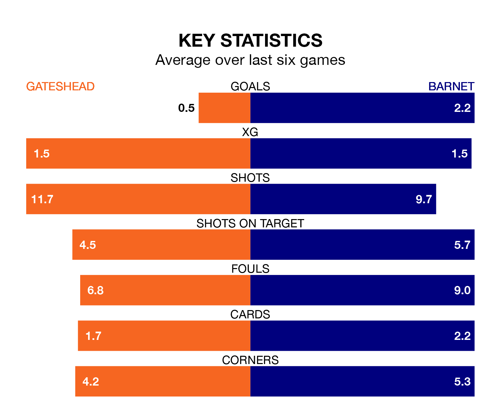

Barnet travel to the Gateshead International Stadium for Saturday's match against Gateshead looking to bounce back from defeat last time out in National League.
The Bees, who sit third in the league after 29 games, fell to a 2-0 away defeat to Oldham Athletic on Tuesday.
They face a Gateshead side who also lost their last match, a 1-0 defeat to Dorking Wanderers, and who sit 11th in the table.
With 57 goals in 29 games so far this season, Barnet are the league's second-highest scorers with 2.0 goals per game. And they are conceding fewer than average, letting in 42 goals at a rate of 1.4 per game.
Gateshead are also above average scorers, with 1.9 goals per game, compared to a league average of 1.5. They have conceded 1.4 goals per game.
In the last 10 years, Gateshead and Barnet have played each other on eight occasions. Gateshead won four of them, Barnet one, and they drew three times.
On average, the Tynesiders scored 1.6 goals and the Bees 1.2 in those matches.
Their last meeting was on November 18, when Gateshead won 2-0 away.
The Tynesiders are in bad form in National League, with one win and a draw from their last six games.
With four wins and two losses over that period, the Bees's form is much better – they have taken 12 points from 18, compared to the home side's four.
Updated: 08:51 (UTC), 25/01/24